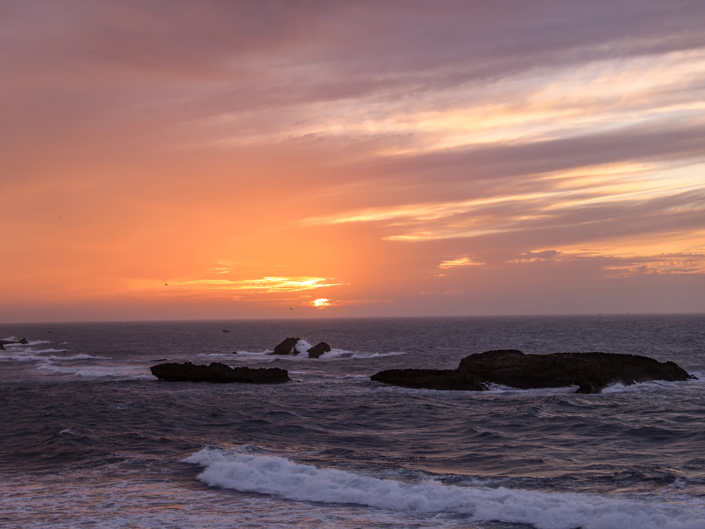

Océan · Surf · Villages de pêcheurs
La Mer
La Mer, c’est l’Atlantique au quotidien : bateaux bleus, ruelles blanches, matins de surf et après-midis de terrasse. Voici les côtes que nous connaissons par cœur.

Les villes et lieux que nous éclairons
Essaouira
La cité fortifiée face à l’Atlantique : remparts et bateaux bleus, alizés toute l’année, port de pêche, musique gnaoua. Matins de surf, après-midis de terrasses et de ruelles blanches.
Sidi Kaouki
Le calme à vingt minutes au sud d’Essaouira : une dune, un phare, des cavaliers au galop sur la plage et une ferme perdue pour les déjeuners longs.
Imsouane
La baie aux deux vagues, entre Essaouira et Agadir : des rides tranquilles qui durent des minutes, des cabanes de pêcheurs et des nuits au son des vagues.
Taghazout
Le village de surf devenu légende : points de classe mondiale, cafés de bord de mer où pêcheurs et surfeurs partagent la table, couchers de soleil sur les spots du nord.
Mirleft
Plus au sud, les falaises rouges et les plages sauvages : débuts en surf tranquilles, promenades entre palmiers et océan, couchers de soleil qui font oublier l’heure du retour.